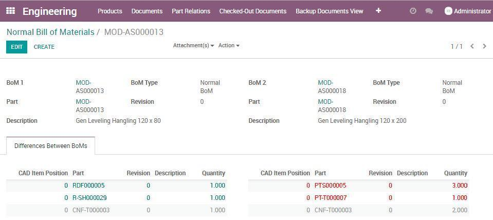

LibrePLM is integrated with main CAD systems like:
Ask for an integration not included into the list.
Products are data collections which indicate what has to be manufactured while documents are data collectors representing products or manufacturing equipments, typical CAD documents are 2D or 3D representations. Edit Parts and Assign Docname allow to associated to models and layouts products and documents data. Usual data are part number, description, material, document number, etc.
All users can open at the same time all documents saved into LibrePLM, in Check-in mode: in this case designers are prevented from modify and upload them to server. A document can be put in check-out mode by a user (only one user a time) who can edit and upload it to server. This way you always know who is in charge of a document or has modified it in the past
If does not exist anything of similar to the product you need to design, you have to create new part from scratch; using Odoo you can search and navigate relations, to understand the impact of changes, before to start. For assemblies you can use top down approach importing existing parts/assemblies. When your product can be easily derived from existing ones you can clone them, apply your changes and save it with new product and document data.
When you complete the design phase your products can be manufactured. If you need to apply small changes to an existing product not requiring to create a new part number you can simply create a new revision. New revisions can be applied to specific assemblies giving you the flexibilty required in case of "Make To Order" manufacturing.
A monitor is provided in order to control what is uploaded to odoo. At any moment you can know the list of document requested to upload to odoo and the completion status.
A PLM system is primarily a trust based system. Each operation is allowed and required to each responsible user. When you are ready to implement a new product or a change on it, you will apply your choices and all users will be able to use with confidence the result of them.
When status is in draft and the document is in check-out, the designer can apply changes and upload them to odoo. Other users can load the same documents in check-in so they can do anything but update them.
When designer has completed his/her job and document is moved into check-in condition, the status can be changed to confirmed, waiting for supervisor approval.
When supervisor approves, everything is moved to release and manufacturing and sales processes can start. When the process is applied first time, products and documents are in 0 revision. After release, if small changes are required, new revisions are created and the process starts again from draft.
Modern systems work "out of the box", LibrPLM has this approach proposing a basic workflow process, useful to main manufacturing companies. Both products and documents have the same basic process. Moreover you can customize it adding all necessary steps to design your own process.
LibrePLM introduces new kinds of Bill of Materials to improve flexibility and empower your business. Engineering BOM: it represents the exact image of the CAD structure; it allows to check designer job when uploaded to Odoo. Normal BOM is the standard type of BoM in Odoo and it is used for manufacturing; you can obtain Normal BoM starting from Engineering with an automation. You can edit Normal in order to adjust quantities or to manage your process without to involve Engineering department. Spare BOM is developed to improve business managing spare parts. Many report options are available in standard LibrePLM: BOM All Levels, BOM One Level, BOM All Levels Summarized, BOM One Level Summarized, BOM Only Leaves Summarized, BOM All Flat Summarized
Engineering BoM: automatically created when uploading assemblies, it represents a perfect picture of CAD documents.
Normal BoM: based on EBOM, it can be edited and used for manufacturing ensuring the flexibilty to your business model.
Spare BoM: specific for spare parts, it can be edited and used to improve you post-sales business.
Last but not least, LibrePLM introduces a special tool named "Compare Bom", to help to understand differences between BoM of products. You can compare different revisions or products to analyze differences between them.
LibrePLM enhances Product and BoM entities and introduces Document a special entity to manage files having revison in Odoo. These improvements help to obtain an integrated environment for Engineering and Manufacturing reducing errors and improving your business performances.
Product details
Document details
Product data sheets are enriched with new special pages or actions. The "Where Used" option allows to know the assemblies in which a specific part is used. Other reports allow to print all 2D drawings related to a product; this is a useful way to share updated printouts of the products with company departments.
Engineering info collects all data to have it uniquely indicated as part number, description, material, size, weight, and so on.
Linked documents contains documents related to the product, usually 3D Model and 2D Layout but also other documents needed to be maintained under revision.
Document data sheet contain specific info about document and also lists related products so to analyze anytime the impact of changes.
Document Relations while BOMs show what are the parts included into a product, this relation describes the hierarchy between documents; it is a quick way to analyze impact of changes in terms of documents to be changed.
To standardize Description, Materials and Finishing helps to reduce errors speaking a common language. LibrePLM introduces "Descriptions" to build fixed and variable descriptions so to normalize the values and their representation.
Dictionaries
Part Numbers rules
Configurations are available to create standard for Description, Materials and Finishing (know as Dictionaries). Part number rules allow administrator to create all coding rules necessary to uniquely identify new products. Designer can use them and reduce data input time and error possibility.
Administrator can search all checked-out documents and uncheck-out them if necessary (for example in case of unavailable access to a PC)
When you upload a document, previews copy is put in backup area. Administrator can use this feature to recovery previous version in case current document is damaged
All module activities are logged and administrator can access to log in case something wrong happens